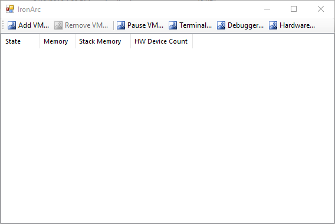

Chris Akridge
Software Developer
IronArc is still in development and no version is currently available for download. However, please check the below links development material.
IronArc is a virtual machine running a simple custom instruction set. The IronArc host will run multiple VMs and provide access to the machines using the Debugger. Attach virtual and physical hardware (terminals, I/O, and disk access). This is not meant for production or serious use - it is a learning exercise in low-level programming.
IronArc is specified to run as a virtual machine consisting of a processor and block of memory. The processor has eight 64-bit general purpose registers EAX through EHX, stack registers ESP and EBP, relative addressing register ERP, and instruction pointer EIP. Various instructions process data and load/store it to memory.
I/O in IronArc is specified to be done through "hardware devices", some of which map to actual hardware, and others that map to devices implemented in software by the host, things like a terminal window or disk access.
IronArc programs can be written in raw assembly using the upcoming IronAssembler, or in Cix, an upcoming simple C-like language.
The host will support running multiple VMs concurrently, using cross-thread messaging to avoid shared memory problems. A debugger will display a disassembly of memory at the instruction pointer and allow the user to step through the code and modify the values of registers and memory.
